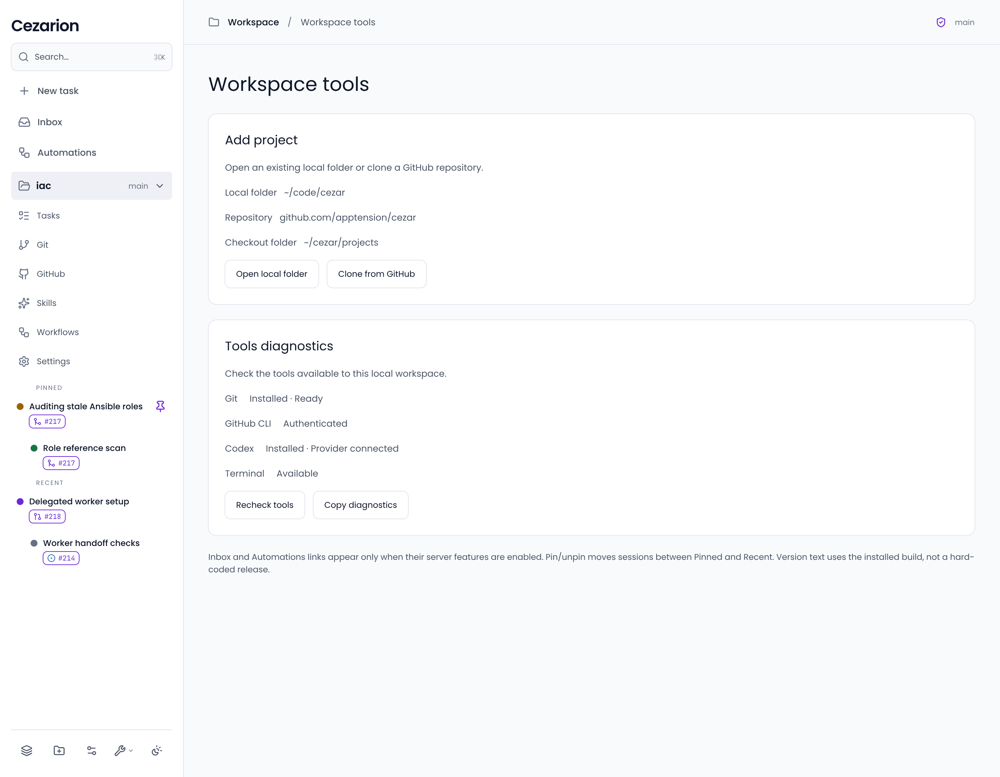
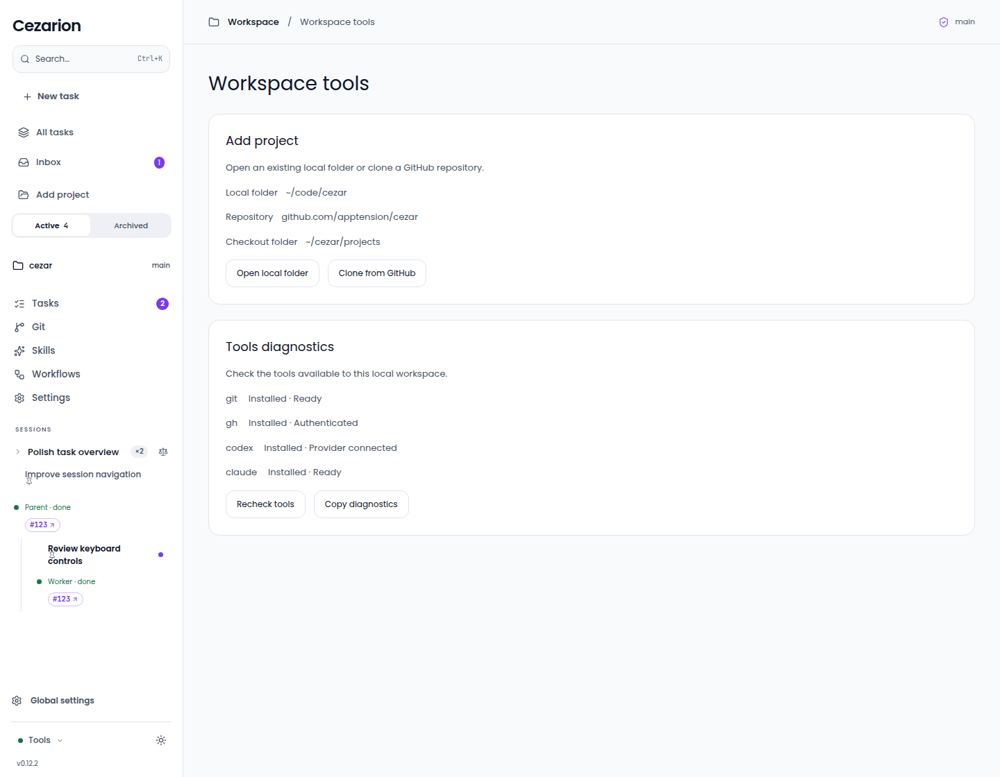
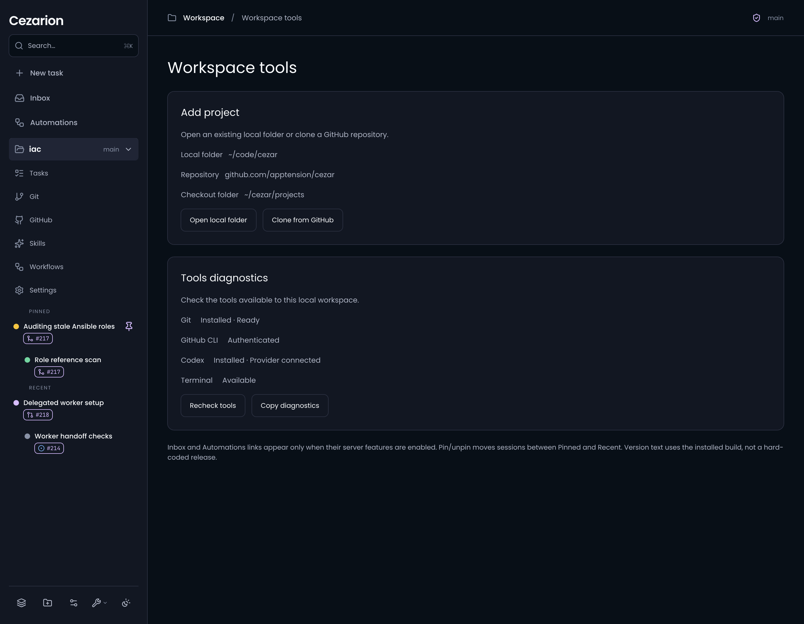
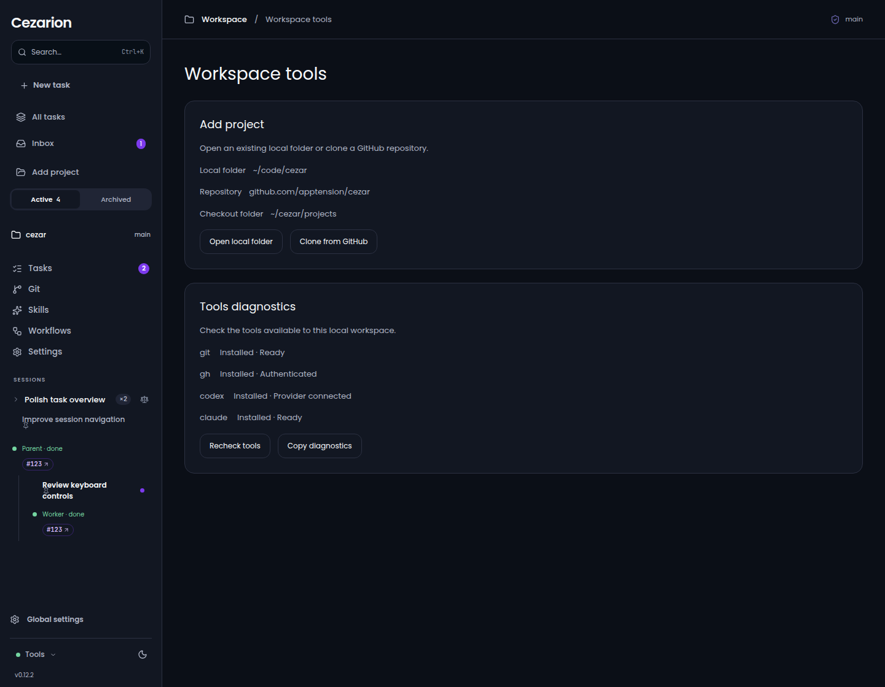

Design and browser shown at1440×1120CSS; rawdesign@2xretained. Browser built from worker source plus source.diff. Mockhealth and folderlisting only; WebSocket health suppressed in this browser fixture. Actual app tool names/status formats retained. Sidebar remains older shared-shell baseline; it is not accepted here. Reference authoring guidance beneath panels omitted from product UI.



